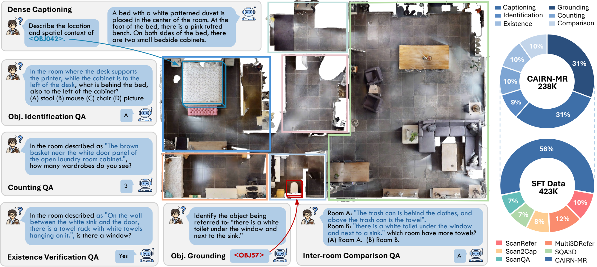
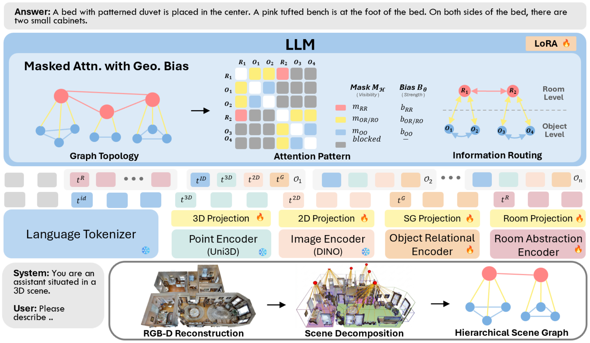
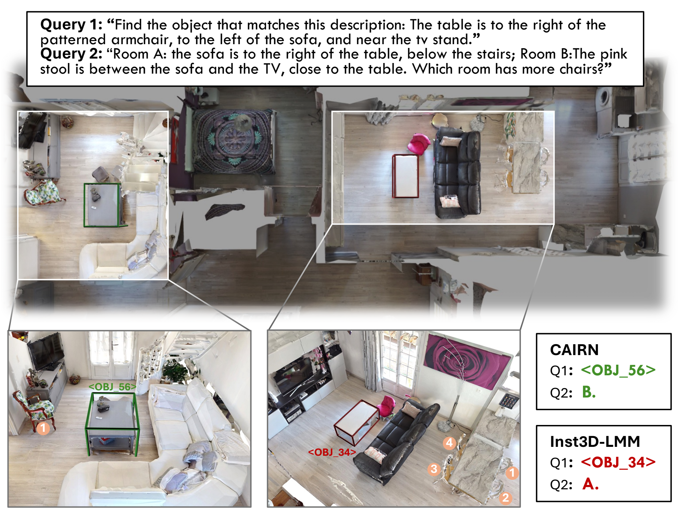

Existing 3D scene-grounded large language models (3D-LLMs) focus on answering questions grounded in simplified single-room 3D scenes, lacking the ability to reason over real-world household environments containing multiple interconnected rooms and diverse object categories. We introduce CAIRN, a topology-aware 3D-LLM for multi-room 3D scene understanding. CAIRN aligns transformer attention with scene hierarchy, giving the model explicit awareness of object-level relations and room-level connectivity. It enriches object tokens with room-local relational context via a graph neural network, introduces learned room tokens for room-level abstraction, and applies a hierarchical attention mask with geometric bias to route information according to scene topology. CAIRN is developed on CAIRN-MR, a benchmark we introduce on HM3D for multi-room 3D scene understanding, covering grounding, captioning, and four question-answering tasks that progressively evaluate from intra-room perception to cross-room reasoning. Experiments show that CAIRN outperforms prior 3D-LLMs by a large margin across all CAIRN-MR tasks while remaining competitive on five single-room benchmarks.

CAIRN-MR is built on HM3D residential environments and contains 673 multi-room scenes (on average 4.5 rooms and ~115 object instances each) with 238K task annotations. Crucially, the target room is never explicitly named: models must first localize the relevant room(s) from implicit object-level spatial constraints before performing downstream reasoning. The six tasks — visual grounding, dense captioning, object identification, counting, existence verification, and inter-room comparison — progressively evaluate from intra-room perception to cross-room comparison. Referring expressions are verified to be unique at the full-scene level, and QA tasks are calibrated against random, frequency, and human baselines (human accuracy 86.8–94.5%).

Given a 3D scene, CAIRN constructs a two-layer hierarchical scene graph capturing object relations and room adjacencies, tokenizes it into object and room tokens, and feeds them to an LLM with hierarchical masked attention and geometric bias. The mask routes information along scene topology — object tokens interact only within their room, while cross-room communication is mediated through learned room tokens — and learned bias terms inject spatial priors (relative pose, distance, room adjacency) into attention logits. This produces a block-sparse attention pattern that reduces object-object attention from O(N²) to per-room cost, enabling topology-aware reasoning across rooms.
Trained under the same two-stage protocol with a Qwen3-8B backbone, CAIRN achieves the largest gains on grounding (+5.4 Acc@0.25) and captioning (+14.9 CIDEr, ~19% relative) over the strongest baseline, with QA gains scaling with the degree of room-level reasoning required. CAIRN also matches or exceeds prior methods on five single-room ScanNet benchmarks, achieving the best or second-best results on 7 of 9 metrics.
| Method | Grounding A@0.25 ↑ |
Grounding A@0.5 ↑ |
Captioning CIDEr ↑ |
Ident. EM ↑ |
Count. MRA ↑ |
Exist. EM ↑ |
Comp. EM ↑ |
|---|---|---|---|---|---|---|---|
| Chat-Scene | 19.6 | 19.4 | 78.3 | 61.3 | 58.9 | 69.5 | 63.6 |
| 3DGraphLLM | 18.9 | 18.7 | 79.6 | 61.9 | 58.3 | 72.7 | 62.3 |
| Inst3D-LMM | 20.4 | 20.0 | 79.5 | 61.8 | 58.5 | 71.6 | 63.7 |
| CAIRN (ours) | 25.8 | 25.4 | 94.5 | 62.1 | 61.1 | 76.1 | 70.4 |
Multi-room performance on CAIRN-MR. All methods use Qwen3-8B and the same two-stage training protocol.

@article{liang2026cairn,
title = {CAIRN: Cross-Room 3D Scene Understanding with Topology-Aware Large Multimodal Models},
author = {Liang, He and Ma, Chenyang and Zhang, Yiming and Shin, Sangyun and Markham, Andrew and Trigoni, Niki and He, Yuhang},
journal = {arXiv preprint arXiv:XXXX.XXXXX},
year = {2026}
}